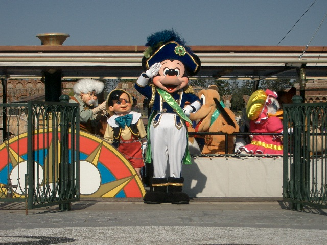
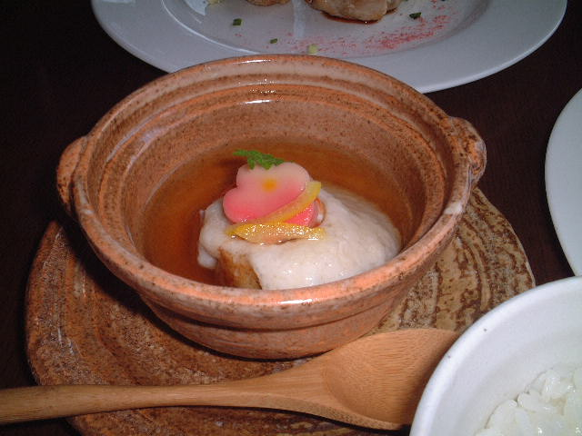
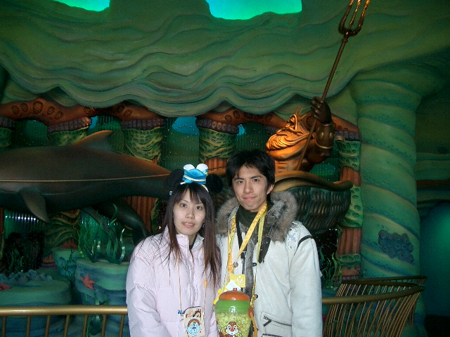
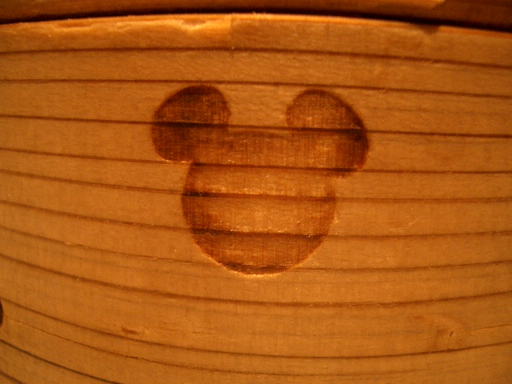
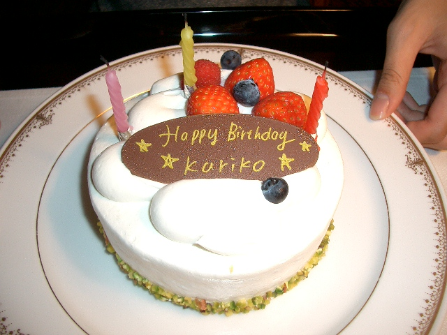
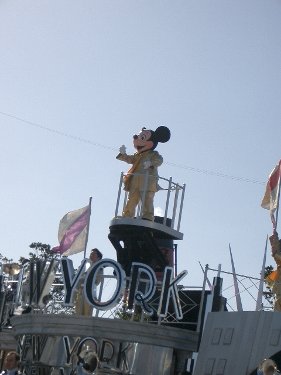
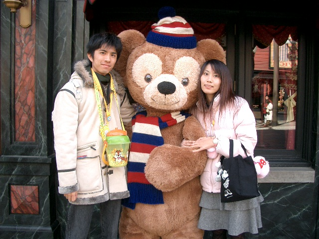
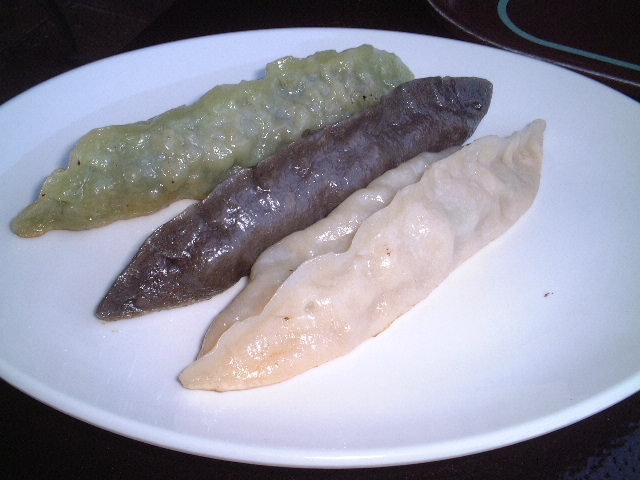
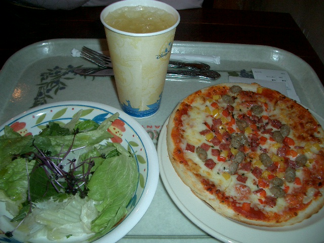

2005-02-25 金曜日 編集
■ クレジットカード手数料
東名高速道路、上り足柄SAにて、売店で105円の飴をクレジットカードで買おうとした時、レジのおじさんに「カードで買うの？手数料の方がかかるよ。手間もかかるよ。」みたく言われた。完全に店側の都合でしょ！客に文句を言うことではない。
ただ単にこの人がクレジットカードについて無知なだけだったのかなぁ。
ご存じのとおりクレジットカードの手数料は客から取ってはいけない。それを知らずに客側に手数料が載ると思ったのだろうか。手数料は商品代金に対する割合で決まるので「手数料の方が高くかかる。」と言うこともありえないし。
「手間が掛かる」と言うのは明らかに店側の話だが、クレジットカードを使い慣れていないが故にそう言ったのだろうか。
2005-02-21 月曜日 編集
2005-02-20 日曜日 編集
■ VHS->DVD
最近は、VHS で撮り貯めてきたビデオを DVD にダビングする人が多いと思う。
VHS と DVD の両方を備えた DVD レコーダーの人気も高いようだ。
VHS -> DVD のダビングする時の注意点。考えてみれば当たり前なのだが、このミスをしている人は多いと思う。
簡単に言うと、画質の悪い VHS のビデオは DVD にダビングする時には高画質にしないといけないこと。逆に、高画質の VHS のビデオは DVD にダビングする時に多少圧縮率を高くしても画像の劣化が少ないと言うこと。
理由は簡単で、MPEG の特性によるもの。簡単に言うと MPEG は動きの無い部分を圧縮することによりエンコードしている。
その為、画質の悪い VHS の場合、ノイズなどの映像の乱れにより動きの無い部分がほとんど無い状態になっており、それを無理やり圧縮すると、元々画質が悪かったものがさらに悪くなる。
こういった理由により、画質の悪い VHS ビデオほど高画質モードでダビングしないといけない。
3倍モードで撮った VHS のビデオだから、DVD にダビングする時も高圧縮モードで良いや、と言う考えは大間違いなのです。
3倍モードで撮ったものを高画質で DVD にダビングすると言うのは腑に落ちないが。
2005-02-19 土曜日 編集
2005-02-15 火曜日 編集
2005-02-14 月曜日 編集
2005-02-13 日曜日 編集
■ オレオレ詐欺
最近流行のオレオレ詐欺、振り込め詐欺とか色々名前があるみたいだが、遂に実家にも電話が来た。
泣き声で「もしもし、お母さん？(;´д⊂) ○○子(姉の本名)だけど(T_T)」と電話がかかってきたらしい。電話に出たのは母で、すぐに切ってしまったそうだ。母曰く「子の声がわからない親がいるか！」。
その先は、どのように言う予定だったのだろう。姉は車を運転しないので、人を轢いてしまったとか言うのは全く通用しないのだが。その辺も調査済みな周到なタイプだったのだろうか。
この電話のあった日の夜に姉から「高校の名簿がこの手のところに渡って同級生の家に不信な電話がかかってきているので気をつけてくれ。」とメールが入ったそうだ。メールを読んだときには既に電話が来た後だったわけだが。
姉さんとは同じ高校なのだが、私の名前で同様の電話はまだかかってきていない。
今度かかってきたらもうちょっとお話してみて欲しい(^_^;)
2005-02-12 土曜日 編集
2005-02-11 東京ディズニーシー/ホテルミラコスタ 編集
2月5、6日とホテルミラコスタ泊で、東京ディズニーシーに遊びに行ってきた。
■ 往路
1月2、3日の時と同様に自動車でディズニーまで向かう。
元々は新幹線で行く予定だったがお金を節約する為に、月曜日に有休を取って自動車で行くことにした。
出発は金曜日の22:00、海老名SAでの休憩を挟んで、無事ミラコスタの駐車場に到着した。
■ リドアイル・ミート&スマイル
毎日1回リドアイルで行われているディズニーキャラクターが挨拶に来るショー。
ミラコスタ宿泊者は宿泊日もミラコスタのゲートから入園できる為、ここから入園し、良い場所を確保した。
ミラコスタのゲートに並んだのは一番。
しばらくは他に人が誰も来なかった。
今回の待ち時間用の為に買ってきたマリオパーティアドバンスを早速やっていたのだが、様子を見に来たキャストの人がキャスト「何をやっているんですか?」私「マリオを(^_^;)」キャスト「ミニゲームがいっぱい入っているやつですか?」詳しい(￣□￣; )!!
子供を相手にすることが多いから知っているのか、ゲーム好きな方なのかは謎。
そして開演後、リドアイルに向かう。
確保した席は、最前列の真ん中(-_-;)すばらしく良い席だ。
ショーの最中は当然中央を中心にキャラクターが動くので自分に向かって愛想を振りまいているようにも見える。
最前列真ん中なので他のゲストが目に入ることも無くとても良い。

■ レストラン櫻
1日目の昼食は、プライオリティシーティングで予約してあったアメリカンウォーターフロントにあるレストラン櫻で食べた。
ディズニーで和食を食べたのは今回が初めて。
今回は、バレンタインデー用のコースを食べた。味は、可も無く不可もなくと言った感じ。
この後のスタンダードツアーでガイドさんから聞いた話しだとここはチラシ寿司がお勧めなのだとか。ふ〜む、チラシ寿司を食べるべきだったか?(^_^;)

■ スタンダードツアー
東京ディズニーシーのツアーの内最も安い、スタンダードツアー。
他の参加者10人くらいとディズニーシーを1時間半かけて一周してガイドの説明を聞いてまわるツアー。
途中アトラクションに乗ったり、ショーの観覧スペースがもらえると言ったサービスはない。
今回は、なんと他の参加者がおらず彼女と2人で貸しきりだった(￣□￣; )!!
ガイドツアーはどのツアーも人が殺到すると思っていたので驚いた。
このツアーは特典があるわけではないので、リピーターは少ないのかも。
ガイドツアーの最中にガイドさんと色々話をするわけだが、自然と今日はミラコスタに泊まって、と言う話しになる。で、夕飯はシルクロードで食べるんです。と言う話しになる。ガイドさんは、「あこがれます。」見たいな事を言ってくれる。どこまで本音かはわからないけど、結構気分が良い。いかにもお世辞って感じではなくて、本気で言ってくれたように私は感じた。

■ シルクロード
プライオリティシーティングで予約をしてあったミラコスタ内のレストラン、シルクロードで夕飯を採った。
早々、彼女の機嫌がなんだか悪い(-_-;
どうもメニューを見て値段が高かったから、う〜んう〜ん悩んで機嫌が悪くなったようだ。
彼女の誕生日なのでお金は私が出すのだが、最近立て続けにアンバサダー、アンバサダー、ミラコスタと宿泊していたので「贅沢しすぎヽ(`Д´)ノ」と言ったのを気にしていたのだろうか。まあ、だんだん機嫌が元に戻ったから良いけど。
シルクロードは、他のレストランに比べてディズニー色が薄い気がする。
私が見た中では飲茶の蒸し器に隠れミッキーが印刷してあったくらいでそれ以外は普通の中華レストランだった。
全てをディズニーにしたい人は他のレストランの方が良いかも(^_^;)

■ 誕生日ケーキ
今回は、彼女の誕生日でミラコスタ泊でディズニーシーを訪れたので、ホテルのルームサービスでケーキを注文した。
1年前はチョコレートケーキだったので、今回はショートケーキにした。
サービスでポラロイド写真を撮ってもらえるのだが、今回は去年よりも奇麗に写った(^_^;)

■ ハーバービュー
今回は、去年に続きポルトパラディーゾサイドのハーバービューに泊まった。
予約受付後、すぐに予約したおかげか、去年よりも良い場所で、ポルトパラディーゾの真正面の部屋だった。部屋番号は4309。
去年は、強風の為、ディズニーシーシンフォニーが中止になってしまったのだが、今回は、ブラヴィッシーモを見ることが出来た。
この日も比較的風が強く、ヴェネチアンゴントラが時折中止になっていてかなり心配したのだが、ブラヴィッシーモは中止にならなかった。
部屋から見た、ショーは、ポルトパラディーゾの前景が見られるだけに逆に小さく見えてしまう。音も、窓を開ければ良く聞こえるがそれでも、近くで見るのと比べると迫力に欠ける。
2日目の夜に近くから立って見たが、近いだけあって大きく、迫力があった。上から見るのと下から見上げるのとでも違うのだろう。
ふーむ、ミラコスタ宿泊は良いのだが、トスカーナサイド等に泊まって費用を節約する方が良いかも。
■ プール
ホテルミラコスタには、プールがある。
冬季も室内プールは営業しており、料金2000円のところこの期間は半額になるクーポンがあったので、1日目の夜に1時間半ほど行ってきた。
ミラコスタのイメージにあった良いプールだった。
でも、冬と言うこともあり、お客は他にいなかった。
ただ、ミラコスタでプールはやめたほうが良いかも。
ご存知のとおり水泳って結構体力を使う。2日ディズニーで遊ぶのに加えプールで泳ぐとかなり疲れる。
ふ〜む、そもそも泳ぐってのが庶民の感覚なのかなあ。
マッタリ時間を過ごすのが正しい過ごし方なのかも。
ここでは、湯上がりならるプール上がりように500ml のペットボトルのミネラルウォータを無料でもらえるのだが、これミラコスタ内のショップ、ミニリザ・サンドリーで200円で売っていたのと同じような。。ペットボトルの蓋の絵柄は違ったがそれ以外は同じような気がする。3つもらってきた。ペットボトルの蓋の絵柄はプールがミラコスタのマーク、ミニリザ・サンドリーが隠れミッキー。
せっかくなので、このペットボトルの蓋をマイカーのナンバープレートの封印に付けてみた。(最近これやっている車少なくなったが・・・。)
■ フォトエキスプレス
ディズニーで写真を現像に出すとディズニーのフレームを付けてくれるサービス。
このサービス自体はずっと昔から行われていてはるか昔に家族で行ったときにディズニーランドで現像した写真もある。
今回は、1月2、3日の東京ディズニーランド/シー、1月下旬の御殿場時之すみか、今回の東京ディズニーシーで撮っていた写るんですがあったので、それをミラコスタで現像に出した。
現在の期間は、ここで現像に出すとディズニーキャラクターの写った写真が一枚もらえるサービス期間中でミニーちゃんの写った写真をもらった。これって、「チップとデールの写真が欲しいです。」と言えばそれにしてもらえたのかなあ。聞いてみれば良かった。
写真の周りのフレームは、ミラコスタで出すとミラコスタオリジナルのフレームになるのだが、バレンタインデーの企画、ハート・オブ・ロマンスの期間でそのフレームもあったので、そっちにしてみた。
値段は27枚の現像で1800円ほど、普通に写真屋さんで現像に出すことを考えたらとっても高い。
このサービス、銀塩写真にのみ対応していて、デジカメ等のプリントアウトには対応していない。
■ リズム・オブ・ワールド
2月1日から5月9日までウォーターフロントパーク特設ステージで行われているショー。
TV CM もやっているのでディズニーにあまり興味が無い人でも知っている人は多いと思う。
1日目は時間があわなかったので断念したが、2日目は、ミラコスタ宿泊の有利な入園を活かして1回目をみて、さらに3回目も見た。
スタンダードツアーのガイドさんが「夜の方がお勧めです」と言っていたのだが、確かに、夜の方が良い。
夜の回では、照明を活かした演出が入るのでそれだけで随分変わってくる。
今回はディズニーシーがとても空いていたのだが、ここばっかりはかなり混んでいた。ゴールデンウィークとかはどうなってしまうのだろう。

■ ディズニーベアー
去年くらいから出てきたキャラクターで、一気にヒットしたらしい。
確かに、うけそうなかわいらしいキャラクターだった。
列に並んで一緒に写真撮ってきたし。
彼女いわく「顔の模様が隠れミッキーになっている」のだと言う。確かにそうかも。まあ、偶然ではないだろうなあ。

■ ノーチラスギャレー
お正月に餃子を食べようと思って入ったミステリアスアイランドのノーチラスギャレー。残念ながら既に閉店していた。
そのリベンジと言うことで、2日目のお昼にここで餃子を食べた。
なんだか見た目がナマコみたいだ。
一番ノーマルの白い餃子が美味しかった☆

■ ビッグシティ・ヴィークル
お正月にディズニーシーに来た時に何度も乗ったのだが、今回も1回乗った。
今回は、良い運転手さんに当たって、道中面白おかしく説明をしてくれた。
ディズニーってサービスは一律って勝手に思っていたがそうでも無いんだねえ。
前回お正月に何度も乗ったときは一度もそういう運転手さんに当たらなかった。説明が下手とかではなくて、そもそもその時は説明も無くて単純に行き先まで運んでくれるって感じだった。ニューヨークでの周遊コースでも。
この人の時にニューヨークの周遊コースに乗ってみたい。
■ ファストパス
2月は1年の中でも一番ディズニーが空く時期らしいが、今回は去年にもまして空いていた。
2日目の日曜日は朝からストームライダー、マーメイドラグーンシアターはファストパスチケットを発券しておらず、センターオブジアース、インディージョーンズと言った人気アトラクションもあまりの空き具合に途中からファストパスチケットの発券が取りやめになった様子だった。
夜になると、センター・オブ・ジ・アース スタンバイ5分、インディジョーンズ スタンバイ5分、海底2万マイル スタンバイ5分と言う凄い状態だった。
この時に海底2万マイルに乗ったのだが、待ち時間5分どころではなくて、待ち時間0どころか、1台貸し切りだった。もしかして、センター・オブ・ジ・アースなんかもそんな感じだったのかなあ。
2日目の夜と言うこともあって疲れなどもあり海底2万マイルにしか乗らなかったが、今にして思うと普段ファストパスチケットを発券するようなアトラクションはこの時にガンガン乗っておいたら良かったかも。
行ける機会は無いけど、2月の平日ってどんな感じなんだろう。
■ ザンビーニ・ブラザーズ・リストランテ
夕飯にメディテレーニアンハーバーのザンビーニ・ブラザーズ・リストランテでピザを食べた。
お昼に続き軽めのご飯。
お金云々ではなく、こういう食事はなかなか好きだ。
ホテル泊の時もしっかりしたコース料理は1日目の夕飯くらいで良いかなあ。

■ 復路
丸二日楽しんだ後帰路に着く。
お正月のアンバサダーと同様に海老名SAまで行って寝るつもりだったのだが、予想以上に眠くなかったので、そのまま牧の原SAまで来てしまった。
前回は、隣の彼女も首都高にいる内に寝てしまったのだが今回はずっと起きていた。何でだろうと思ったのだが、答えは簡単で、前回は閉園時間が22:00で、今回は20:00だったから。疲れているとはいえ普通に起きていられる時間だ。
高速道路の深夜割引の時間調節も兼ねて牧の原SAで寝た後、帰宅。
■ ブーツ
ここで書いた、ブーツの履き方を試してみた。
サイズが気になることは最後まで無かった。
ただ、ブーツは靴底が硬くて、足の裏にマメが出来そうになった。
帰ってきてから早速、100円ショップに行き、靴底に敷くジェル状の靴敷きを買った。
今度は、26日に日帰りツアーでディズニーランドに行くのでここで試してみよう。
■ ディズニーシー制覇リスト 残り
＜メディテレーニアンハーバー＞
フォートレス・エクスプロレーション
＜アメリカンウォーターフロント＞
セイル・アウェイ(ショー)
＜マーメイドラグーン＞
アリエルのプレイグラウンド
2005-02-03 木曜日 編集
■ 「きのこの山」と「たけのこの里」はどっちが売れているのか
私はもっぱらたけのこの里で、誰もがたけのこの里の方が好きだと思っていたらそうでもないらしい。
記事によるとわずかにたけのこの里の方が売れているようだ。
久しぶりにたけのこの里食べたいな〜。
2005-02-02 水曜日 編集
2005-02-01 火曜日 編集
■ 毛穴吸引機
National エステジェンヌ スポットクリア 毛穴吸引 密着吸引ミスト付き ブルー EH2511-A
私は、鼻の毛穴の汚れが気になっている。
今回、前から気になっていたナショナルの毛穴吸引機 EH2511 が地元のエイデンで決算セールで4000円で売っていたので買った。
早速使ってみたが、当たり前と言えば当たり前、いまいち利いているのか利いていないのかわからない。。
少々面倒だがしばらくは頑張って使ってみよう。
# yuduki_kazama 『ＦＯＭＡだったら買いたかったなぁ(^^;
７００のＮが気になっている。
いくらくらいかなぁ？』
# yohichi 『F が 2月10日、SH が2月25日、N、P が発売予定、なので、3月中くらいに発売かなあ。
値段は、901i よりも1万円くらい安めって言っていたけど、実際はどれくらいなんだろう。
週末に、既に発売されている F, SH がどのくらいか見てみようかな。
N700i 着せ替えだそうだけど、着せ替え予想以上にヒットだねえ。
ディズニーキャラクターのとか、無いのかねえ。』